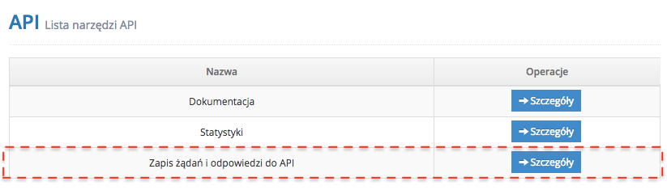
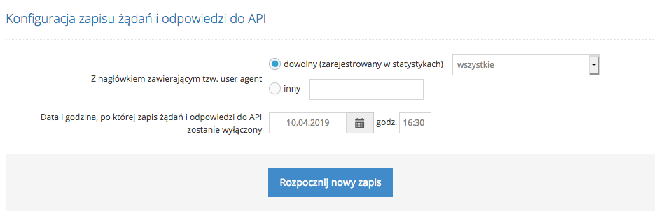

Dostępny w panelu IdoBooking zapis żądań i odpowiedzi do API to mechanizm dzięki któremu jako Developer masz możliwość zbierania w czasie rzeczywistym informacji dotyczących:
- daty i godziny rozpoczęcia wykonywania poszczególnych zapytań i ich odpowiedzi,
- data i godziny zakończenia wykonywania poszczególnych zapytań i ich odpowiedzi,
- czasu wykonywania poszczególnych zapytań i ich odpowiedzi,
- identyfikatorów UAString (user-agent) zawartych w metadanych nagłówków HTTP poszczególnych zapytań i ich odpowiedzi
Jest to także narzędzie, które pomoże Ci sprawdzić czy wykonywane przez Twoje programy lub skrypty, zapytania API posiadają właściwą i wymaganą przez daną bramkę strukturę i czy są przez nią poprawnie przetwarzane oraz już na wczesnym etapie zidentyfikować i wyeliminować występujące w nich problemy zapewniając im bardziej optymalne działanie. Jest to więc świetne narzędzie dla Developera, który tworzy własne programy czy indywidualne integracje.
Konfiguracja zapisu żądania i odpowiedzi wybranego interfejsu API
Chcąc włączyć rejestrację żądań i odpowiedzi do API, przejdź w panelu IdoBooking do strony ADMINISTRACJA / API, a następnie wybierz Zapis żądań i odpowiedzi do API.

Następnie wybierz user agent'a:
- dowolnego (zarejestrowanego w statystykach)
- innego - user agent własnej dowolnej aplikacji
Wybranie konkretnego user agenta pozwoli Ci odfiltrować z logów niepotrzebne żądania i zapisać w nich tylko te, które będą wykonywane przez interesującą Cię aplikację czy inny wykonywany skrypt.
Ostatnim krokiem w konfiguracji jest wybór ram czasowych w jakich zapis żądań i odpowiedzi API ma być nasłuchiwany. W tym miejscu wskaż datę oraz konkretną godzinę do kiedy narzędzie ma nasłuchiwać zapis.

Po skonfigurowaniu powyższych opcji Rozpocznij nowy zapis.
Pobieranie logów żądań i odpowiedzi do API
Każdy rejestrowany typ żądania i odpowiedzi jest umieszczany w postaci osobno zapisywanych plików XML, gotowych do analizy. Aby pobrać cały zapis wystarczy kliknąć w przycisk Pobierz logi żądań i odpowiedzi API i będzie dostępny w postaci pliku zip.
Należy pamiętać, że logi żądań i odpowiedzi do API są automatycznie kasowane po upływie 1 miesiąca od daty zapisu.